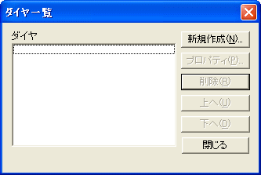
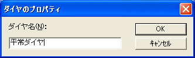
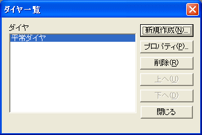
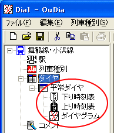

路線のダイヤを新規作成します。
OuDia では、一つの路線ファイルは複数のダイヤを格納することができます。
例えば、『平日ダイヤ』・『土・休日ダイヤ』の２種類を保存することができます。
１． メニューコマンド[ファイル]→[ダイヤ一覧]を選択してください。
・・・ [ダイヤ一覧]ダイアログが現れます。

（図：[ダイヤ一覧] ダイアログ）
 [路線ビュー]の[ダイヤ]アイコンをダブルクリックしても、同じ効果があります。
[路線ビュー]の[ダイヤ]アイコンをダブルクリックしても、同じ効果があります。
２． [ダイヤ一覧] ダイアログの [新規作成...] ボタンを押してください。
・・・[ダイヤのプロパティ] ダイアログが現れます。
３． [ダイヤ一覧] ダイアログの [ダイヤ名] 欄にダイヤ名を入力して、[OK] を押してください。

（図：[ダイヤのプロパティ] ダイアログ）
・・・ [ダイヤのプロパティ] ダイアログが消えて、 [ダイヤ一覧] ダイアログに、ダイヤ名が追加されます。

（図：[ダイヤ一覧] ダイアログ）
４． [ダイヤ一覧] ダイアログの [閉じる] ボタンを押してください。

・・・ [路線ビュー] の [ダイヤ] アイコンの下に、新規作成したダイヤが追加されています。